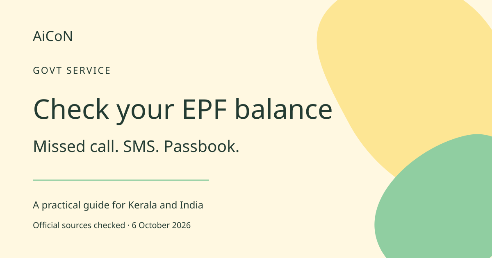

Check your EPF balance by missed call, SMS or passbook
Use the current EPFO numbers and official passbook route. Your activated UAN, registered mobile number and account setup matter.

What are EPF, EPFO and UAN?
EPF is the Employees' Provident Fund. EPFO administers it. A Universal Account Number, or UAN, identifies the member's account relationship. It is different from your mobile number. For employees in Kerala and elsewhere in India, the checking routes show information available to EPFO. A balance check is not a withdrawal and does not transfer money to your bank.
Current numbers and requirements
The live EPFO passbook page checked on 6 October 2026 gives 9966044425 for missed calls and 7738299899 for SMS. Check the current official page before reusing a saved number. A 2018 government release gives an older missed-call number; we have not treated it as current. That release explains that the phone services require an activated UAN and registered mobile. Its missed-call guidance also requires at least one of bank account, Aadhaar or PAN to be linked. If the service fails, check your setup through official EPFO channels.
How to check by missed call
- Use the mobile number registered with your UAN. A different SIM may not identify the account.
- Verify the current number on passbook.epfindia.gov.in. As checked here, it is 9966044425.
- Give a missed call. Do not treat this as a conversation with an adviser.
- Wait for the service response. Read the balance privately and compare it with your records if checking a recent contribution.
How to check by SMS, including Malayalam
- Use your normal SMS app on the registered number.
- Use the published command EPFOHO UAN for English. UAN is shown literally in the government's command, not as an instruction here to send your personal account number to an unknown recipient.
- For another supported language, add the first three characters of its name. The official release includes Malayalam. The Malayalam command is EPFOHO UAN MAL.
- Send to 7738299899 after checking the recipient. Wait for the contribution and balance information available to EPFO.
How to use the online passbook
- Open passbook.epfindia.gov.in and follow its current official login route.
- Keep credentials and OTPs private. Avoid third-party PF-checking pages.
- Review the relevant balance and contribution records. Save copies privately if needed.
- If access fails, read service notices and try later. Do not keep retrying rapidly during a disruption.
Cost, India availability and caveats
The government describes missed-call checking as free. SMS charges depend on your mobile plan. Online access uses internet data. A paid agent is not needed for these checking routes. The current passbook page displays a database-upgrade notice and warns that services may take longer during stabilisation. Another official member-passbook page still displays an unavailability notice. The pages are not fully consistent. Loading the website does not prove that your account login or latest contribution is ready.
AiCoN check and earlier-post correction
The September 29 headline promised ten seconds. That timing is not guaranteed and has been removed. Current numbers come from the live EPFO portal. The registered-mobile and language explanation comes from an older official release, labelled as such. EPFO also warns that it never calls members or pensioners asking them to deposit money. Do not share Aadhaar, PAN, bank details or OTPs in response to such calls.
Frequently asked questions
Do I need mobile data for a missed call?
No. Normal calls and SMS do not need mobile data, but you need mobile-network service and the required account setup.
Why is my latest contribution missing?
The response shows information available to EPFO. Check passbook entries and service notices before concluding that an absent recent entry proves non-payment.
Does checking withdraw my money?
No. A withdrawal is a separate process with its own rules.
Should I pay a caller to release my PF?
No. EPFO warns against payment demands made through such calls.
Sources: EPFO live passbook and numbers. EPFO member-passbook page. PIB phone-service guidance, 2018. Checked 6 October 2026.